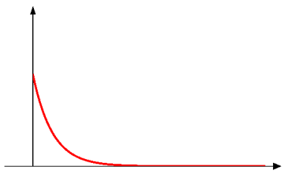
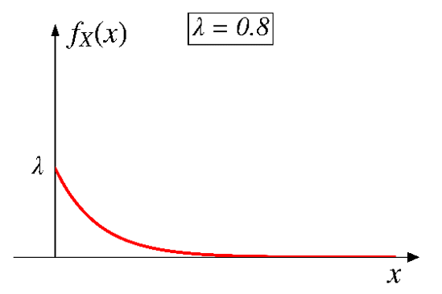
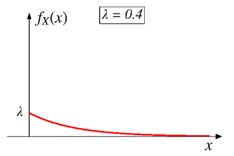
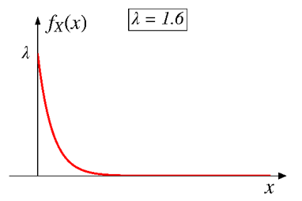
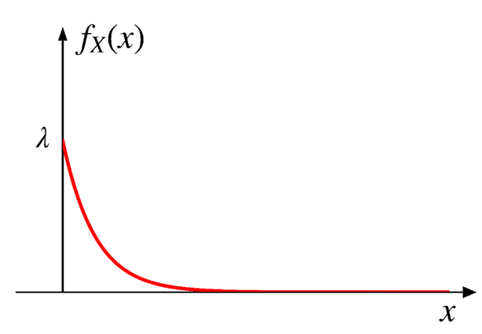
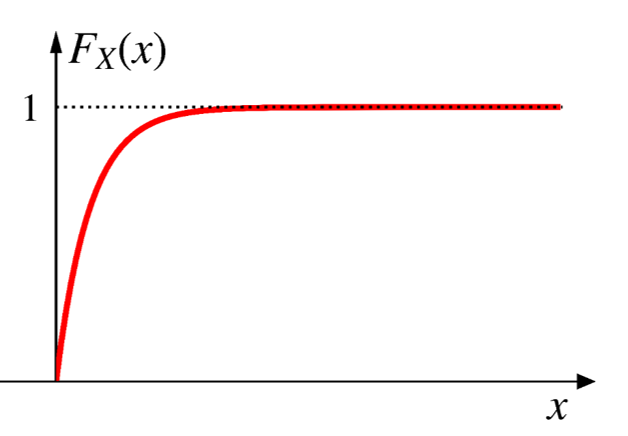
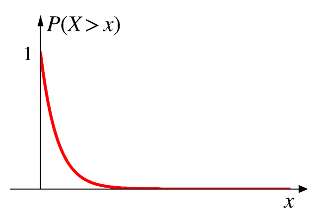
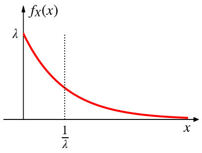

4.5 Exponential distribution
Geometric RV: # of coin tosses needed to see the first heads
\[\small{p_X(k)=(1-p)^{k-1}p, \;\;\;\;\text{for } k=1, 2, \cdots }\]

Exponential:
the continuous counterpart of geometric

Exponential distribution
It is commonly used to model the time between two successive events (termed “interarrival time”).
- Customers arriving at a store
- Phone calls coming into a call center
- “Survival time” (i.e., time to failure) of components

Probability density function (PDF)
\[ f_X(x) = \begin{cases} ce^{-\lambda x}, & \text{if $x \geq 0$,} \\ 0, & \text{otherwise.} \end{cases} \]
where \(\lambda\) is the rate parameter (\(\lambda>0\)).
\[ \small{ f_X(x) = \begin{cases} ce^{-\lambda x}, & \text{if $x \geq 0$,} \\ 0, & \text{otherwise} \end{cases} } \]
The constant \(c\) is to ensure the normalization property.
\[ \small{ \begin{aligned} \int_{-\infty}^{+\infty}f_X(x)dx = \int_0^{+\infty}ce^{-\lambda x}dx &=c\big(-\frac{1}{\lambda}\big)e^{-\lambda x}\bigg|_0^{+\infty} \\ \\ &=-\frac{c}{\lambda}(0-1)\\ \\ &=\frac{c}{\lambda} \color{red}{= 1} \\ \end{aligned} } \]
Exponential PDF
\[ X \sim \text{expo}(\lambda) \]
\[ f_X(x) = \begin{cases} \lambda e^{-\lambda x}, & \text{if $x \geq 0$,} \\ 0, & \text{otherwise.} \end{cases} \]
\[ f_X(0) = \lambda e^{-\lambda \cdot 0}=\lambda e^0 = \lambda \cdot 1 = \lambda \]


Interactive visualization
Exponential CDF
\[ \small{ f_X(x) = \begin{cases} \lambda e^{-\lambda x}, & \text{if $x \geq 0$,} \\ 0, & \text{otherwise.} \end{cases} } \]
\[ \small{ \begin{aligned} \text{If } x \leq 0, \;\;\;\; F_X(x)&=\text{P}(X \leq x)=0 \\ \text{If } x > 0, \;\;\;\; F_X(x)&=\int_0^{x}\lambda e^{-\lambda x}dx=-e^{-\lambda x}\bigg|_0^x=1-e^{-\lambda x}\ \end{aligned} } \]


Exponential CDF
\[ \small{ F_X(x) = \begin{cases} 0, & \text{if $x \leq 0$,} \\ 1-e^{-\lambda x}, & \text{if $x > 0$}. \end{cases} } \]
\[ \small{ \text{P}(X > x) = 1-F_X(x)=1-\big(1-e^{-\lambda x}\big)=e^{-\lambda x} } \]

Memoryless property
- Assume time between phone calls is an exponential RV.
- You have waited for 2 hours, and there was no phone call.
- The prob. of having to wait for at least one more hour, is the same as the prob. of having to wait for at least one hour.
- Every instant is like the beginning of a new random period, which has the same distribution regardless of how much time has already passed.
- Geometric and exponential RVs are the only two RVs that have this memoryless property.
Memoryless property
Given that \(X\) has already exceeded \(t\), the probability of \(X\) exceeding an additional \(s\) is simply the same as the probability of \(X\) exceeding \(s\).
\[ \text{P}(X>t+s|X>t)=\text{P}(X>s) \]
\[ \text{for all nonnegative values $t$ and $s$} \]
The past has no bearing on its future behavior.
\[ \small{ \begin{aligned} \text{Proof:}\;\;\;\;\text{P}(X>t+s|X>t)&=\frac{\text{P}\big((X>t+s) \cap (X>t)\big)}{\text{P}(X>t)} \\ \\ &=\frac{\text{P}(X>t+s)}{\text{P}(X>t)} \\ \\ &=\frac{e^{-\lambda(t+s)}}{e^{-\lambda t}} \\ \\ &=e^{-\lambda s} = \text{P}(X>s) \\ \end{aligned} } \]
Exercise
- Assume the time until you receive a new email is exponentially distributed with a rate of 12 emails a day.
- Assume the time is currently at noon.
- What is the probability of
- not getting any emails within the next 2 hours?
- getting the first email between 4 PM and 6 PM?
- Now it is 1 PM, and you have yet received any email.
- What is the probability of getting one in the next 2 hours?
Expected value
\[ X \sim \text{expo}(\lambda) \]
\[ f_X(x) = \begin{cases} \lambda e^{-\lambda x}, & \text{if $x \geq 0$,} \\ 0, & \text{otherwise.} \end{cases} \]
\[ \text{E}[X]=\frac{1}{\lambda} \]

\[ \small{ \begin{aligned} \text{Proof:}\;\;\;\;\text{E}[X]&=\int_0^{+\infty} x\lambda e^{-\lambda x} dx \;\;\;\;\;\;\;\; \color{gray}{\leftarrow\text{Integration by parts}} \\ \\ &=x\big(-e^{-\lambda x}\big)\bigg|_0^{+\infty}-\int_0^{+\infty}1\cdot\big(-e^{-\lambda x}\big) dx \\ \\ &=(0-0)+\int_0^{+\infty}e^{-\lambda x} dx \\ &=-\frac{1}{\lambda}e^{-\lambda x}\bigg|_0^{+\infty} =0-\big(-\frac{1}{\lambda}\big)\cdot 1 =\frac{1}{\lambda} \\ \end{aligned} } \]
Variance
\[ X \sim \text{expo}(\lambda) \]
\[ \text{var}(X)=\sigma^2=\frac{1}{\lambda^2} \]
Standard deviation: \[ \sigma =\sqrt{\sigma^2}=\frac{1}{\lambda} \]
\[ \small{ \begin{aligned} \text{Proof:}\;\;\;\;\text{E}[X^2]&=\int_0^{+\infty} x^2\lambda e^{-\lambda x} dx \;\; \color{gray}{\leftarrow\text{Integration by parts}} \\ &=x^2\big(-e^{-\lambda x}\big)\bigg|_0^{+\infty}-\int_0^{+\infty}2x\cdot\big(-e^{-\lambda x}\big) dx \\ &=(0-0)+2\int_0^{+\infty}xe^{-\lambda x} dx \\ &=\frac{2}{\lambda}\int_0^{+\infty}x\lambda e^{-\lambda x} dx \\ &=\frac{2}{\lambda}\cdot\text{E}[X] =\frac{2}{\lambda}\cdot\frac{1}{\lambda}=\frac{2}{\lambda^2} \\ \end{aligned} } \]
Apply the shortcut formula for calculating the variance.
\[ \small{ \begin{aligned} \text{var}(X)&=\text{E}[X^2]-\big(\text{E}[X]\big)^2 \\ \\ &=\frac{2}{\lambda^2}-\big(\frac{1}{\lambda}\big)^2 \\ \\ &=\frac{1}{\lambda^2} \end{aligned} } \]
\[ \small{ f_X(x) = \begin{cases} \lambda e^{-\lambda x}, & \text{if $x \geq 0$,} \\\ 0, & \text{otherwise.} \end{cases} } \]
\(\lambda\) is the rate parameter (e.g, 2 emails per hour)
\[ \small{ \text{E}[X]=\frac{1}{\lambda}; \;\; \text{var}(X)=\frac{1}{\lambda^2} } \]
We can replace \(\lambda\) with \(1/\beta\).
\[ \small{ f_X(x) = \begin{cases} 1/\beta \cdot e^{-\frac{x}{\beta}}, & \text{if $x \geq 0$,} \\ 0, & \text{otherwise.} \end{cases} } \]
\(\beta\) is the mean parameter (e.g, 0.5 hours between emails)
\[ \small{ \text{E}[X]=\beta; \;\; \text{var}(X)=\beta^2 } \]
These are two “parameterizations” of the distribution.